Welcome to the X-Zone. The battle for the Platinum Emblem begins now. Are you ready to ride?
Start Race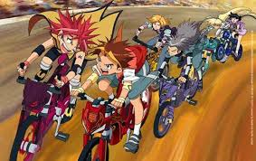
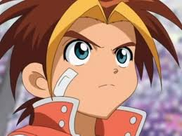
The enthusiastic protagonist who loves MTB. Owner of the legendary Flame Kaiser. He rides with his heart and never gives up.
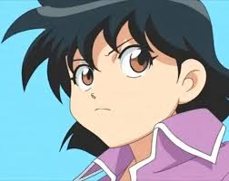
Sho's childhood friend and the reliable sister figure of the group. Skilled and calm, she rides the Neptune with precision.
A passionate MTB rider who gets pulled into the X-Zone. His bond with Flame Kaiser is unbreakable. Bike: Flame Kaiser.
Sho's childhood friend. Calm, strategic, and fiercely loyal. She rides Neptune and is one of the strongest riders in the group.
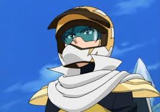
The cool and elite rival of Sho. Rides the Thunder Emperor with incredible speed and technical mastery. Later becomes an ally.
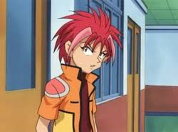
A big-hearted and powerful rider from the X-Zone. His raw strength and loyalty make him a key member of Sho's crew.
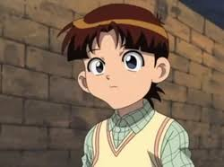
Sho's younger brother and the reason Sho entered the X-Zone. A legendary rider who disappeared after a mysterious race. His fate drives the entire story.
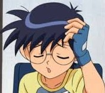
Young and energetic, Kakeru brings enthusiasm and heart to every race. He looks up to Sho and grows throughout the series.
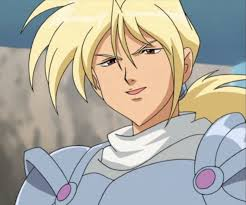
A powerful and determined rider who commands the Hammer Head. Arthur's brute force and fearless style make him a formidable presence in the X-Zone.
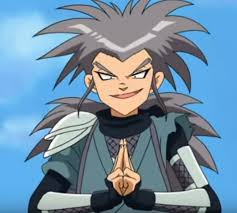
A ruthless and cunning antagonist who controls the X-Zone's dark forces. Rides the Aero Scissors with terrifying aggression.
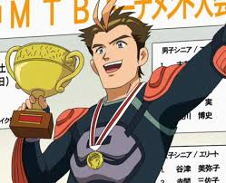
Sho and Ayumu's father and a legendary rider of the X-Zone. He rides the mighty Imperial X, the most powerful bike ever created.
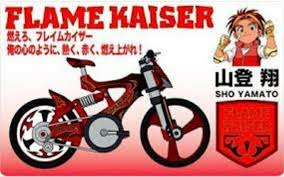
The legendary red MTB with a fiery spirit. Responds to Sho's emotions and unleashes the Idaten Jump at full power.
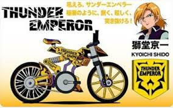
A powerful MTB crackling with electric energy. Built for raw speed and dominance on any terrain in the X-Zone.
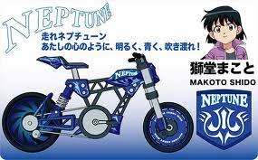
A sleek blue MTB built for precision and control. Neptune's balanced performance mirrors Makoto's calm riding style.
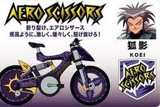
A razor-sharp MTB designed to cut through the air. Its scissor-like frame slices through any course with deadly precision.
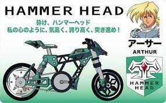
A heavy-hitting MTB built like a battering ram. Smashes through obstacles and overpowers rivals with sheer brute force.
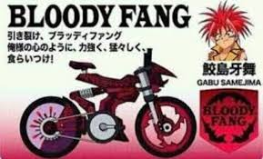
A dark and menacing MTB ridden by Gabu. Aggressive, unpredictable, and built to destroy every opponent in its path.
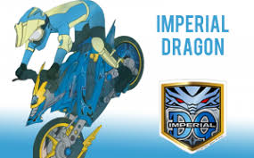
A fearsome dragon-themed MTB ridden by Sho's younger brother Ayumu. Imperial Dragon dominates the X-Zone with overwhelming force and authority.
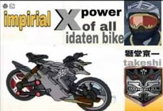
The ultimate MTB ridden by Sho's father Takeshi Yamato. Imperial X is the most powerful bike in the X-Zone, representing the pinnacle of bike evolution.
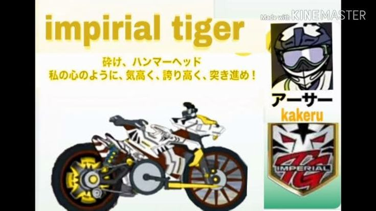
Young and energetic Kakeru rides the Imperial Tiger with fearless spirit. The tiger-themed MTB matches his explosive and unpredictable racing style.
Idaten Jump is a Japanese anime series that follows Sho Yamato, a passionate young mountain bike (MTB) rider who one day gets mysteriously transported into a hidden parallel world known as the X-Zone — a dangerous and thrilling realm where MTB battles decide everything.
In the X-Zone, riders compete in intense races across extreme terrains using special bikes with unique abilities. Sho rides the legendary Flame Kaiser, a fiery red MTB that responds to his emotions and grows stronger with his determination. Alongside his childhood friend Makoto Shido and rival-turned-ally Kyoichi Sudo, Sho fights his way through the X-Zone's toughest challenges.
But Sho's journey is driven by more than just racing — he is searching for his younger brother Ayumu Yamato, who disappeared into the X-Zone after a mysterious race. As Sho digs deeper, he uncovers the truth about his own family, his father Takeshi Yamato, and the legendary bikes that hold the fate of the X-Zone itself.
With high-octane races, powerful rivals, evolving bikes, and a story full of heart and brotherhood, Idaten Jump became a beloved classic — especially among fans in India where it aired on Cartoon Network.
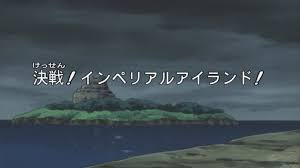